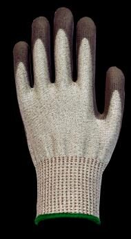

Technical
Wing vs Vertical Coating Plants
Why horizontal former movement eliminates drop marks, and how 70–80 m leaching changes glove chemistry.
Read Comparison →Catalogues, certifications, technical articles and answers — all in one place. Documents live in assets/documents/ so your team can update them anytime.
Full company profile: history, factories, machinery lines and product ranges.
Complete glove range with specifications, cut levels, colours and packaging options.
All 14 machinery lines with configuration checklists and utility requirements.
PU piping, EVA sheets, spandex and Lycra fabrics with MOQs for sports glove makers.
Cut, abrasion, tear and puncture results for TH-700 series gloves (Levels A–D).
A2–A4 cut classifications for the North American market.
Korean respiratory protection certification for our face mask range.
US FDA certification application documents for face mask products.
Why horizontal former movement eliminates drop marks, and how 70–80 m leaching changes glove chemistry.
Read Comparison →
EN388 vs ANSI ratings explained — and how to match Level A–D gloves to real workplace hazards.
Read Guide →
Our in-house engineered mask machinery now produces KF94 and KF80 masks with FDA application underway.
Read More →